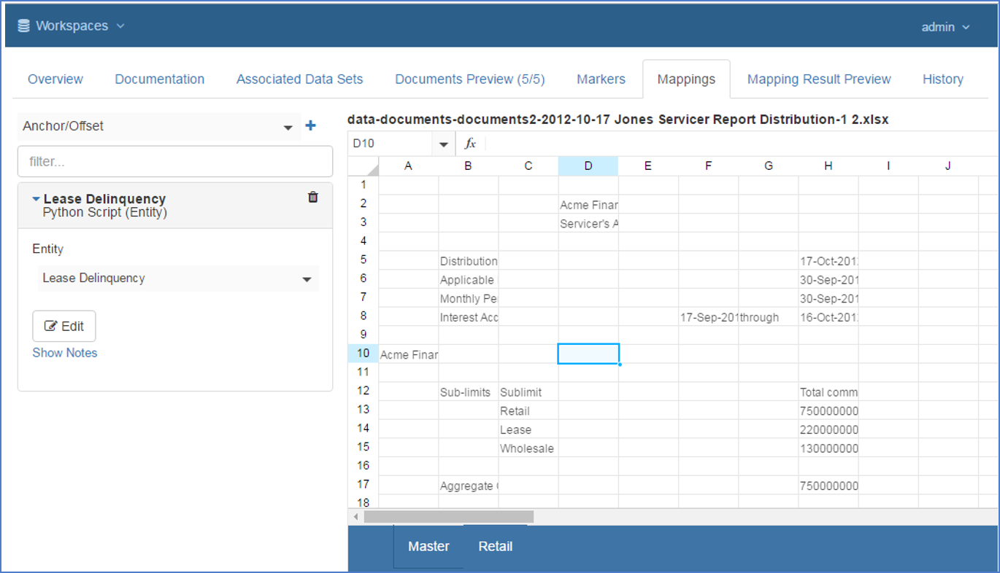
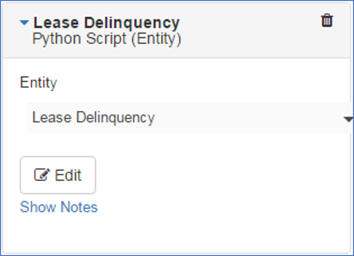
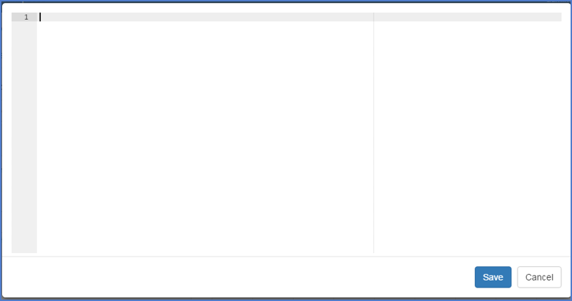

Appendix Classification - Advanced Data Extraction Examples
Introduction
This appendix will provide examples of advanced data extraction. The assumptions may include knowledge of Python and / or Groovy Scripting. The number of examples will grow over time.
Iterating over a Range within a Document
This example describes how to iterate over a range within a document to so that you can extract multiple rows of data and populate rows within the Target Entity.

This capability is available using a Python Expression (Entity) which is accessed from the Edit->Mapping tab of a Classification Screen:

When you add a Python Script (Entity) mapping, you have to specify the Entity which will be populated with the results of the mapping logic. The example above shows that the mapping has been set to the entity Lease Entity.
Defining your Mapping Expression
To build your expression, press the Edit button on the mapping tile. This will open up a Python scripting window:

Since this example is based upon extracting data from an Excel Workbook; the first thing you must do in order to begin your expression, is to import the Pendo ExcelHelper library. Enter the following code at the top of the script window:
from com.pendosystems import ExcelHelper
Declare and initialize a variable in order to be able access the Excel plug-in functions.
# Initialize the helperhelper = ExcelHelper(document)
Once we have created a helper we can use it in the same way as we have in the expressions. For example, to find a specific value:
distribution_date = helper.getWorkBook().getSheet("Retail").find("Distribution Date").rightWithContent().getValue()
Accessing and Updating the Entity
In order to populate the Target Entity, you use the entities.append() function. The syntax of this function is the following:
`Entities.append({“attributeName”:value, [“attributeName”:value],…})``
Where:attributeName is the Name of the Attribute. This is the API name of the attribute as defined in the Entity, not the Descriptive Name of the attribute which appears in the mapping preview. The 'attributeName' is also case sensitive.
Value The value that you want to assign to the Attribute.
Using Iteration
Now that you know how to populate an Entity, you can use any of Python’s control structures to loop through the document and add to the entity.
For the example lets just create a few entities using a range using a for loop:# Capture a value for the Distribution Datedistribution_date = helper.getWorkBook().getSheet("Retail").find("Distribution Date").rightWithContent().getValue()
# Append the values to the Entityfor current in range(2,10):entities.append({"DistributionDate":distribution_date, "servicer":"Example", "current":current })
The result of this expression would be:
| Distribution Date | Servicer | Current |
|---|---|---|
| 12/31/2013 | Example | 2 |
| 12/31/2013 | Example | 3 |
| 12/31/2013 | Example | 4 |
| 12/31/2013 | Example | 5 |
| 12/31/2013 | Example | 6 |
| 12/31/2013 | Example | 7 |
| 12/31/2013 | Example | 8 |
| 12/31/2013 | Example | 9 |
| 12/31/2013 | Example | 10 |
You can also use Python’s while structure so that you can perform a test to see when the iteration should stop:rowIndex = 1while(rowIndex < 3):entities.append({"DistributionDate":distribution_date, "servicer":"Example", "WholesaleTotalCommitment": commitment})
rowIndex+=1
commitment = helper.getWorkBook().getSheet("Master").find("Total
commitment").down(rowIndex).getDecimal()
The Output of this mapping would be:
| Distribution Date | Servicer | Wholesale Total Commitment |
|---|---|---|
| 12/31/2013 | Example | 7500000000 |
| 12/31/2013 | Example | 2200000000 |
| 12/31/2013 | Example | 13000000004 |